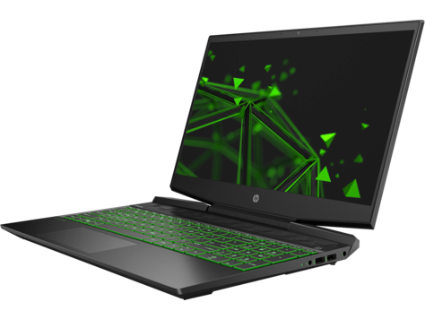

目次
このプロジェクトについて
ローカルでAIモデルを動かすためのマシン選定を目的とした調査プロジェクトです。2つの問いを扱っています。
- いま使っているPCで何ができるのか — 実行環境の実測スペックと、ローカルLLM用途での限界
- 買うとしたら何がいくらなのか — 少し規模の大きいローカルLLMが動作するPCの国内価格比較
調査に使った手段
| 対象 | 手段 |
|---|---|
| 環境PC のスペック | PowerShell（Get-CimInstance・nvidia-smi・Get-NetAdapter） |
| 各社の価格・仕様 | WebFetch → claude-in-chrome → PlayWright（共有環境）の順に切り替え |
| 製品画像の取得 | PlayWright ヘッドレスChromium。公式・正規流通ドメインに限定して9件取得 |
| HP の価格・確定仕様 | 日本HP のキャンペーンページと公式スペック表（jp.ext.hp.com） |
| Apple Mac の構成・価格 | Apple公式ストアで PlayWright により実際に構成を選択して取得（2026-08-25） |
価格調査は途中で手段を変えています。 当初は個人ブログの比較表に依拠していましたが、一次情報で検証したところ8件中3件が誤りでした。誤りはいずれも構成の違う機種を同じ製品名で並べていたことに起因します。
このリポジトリの決めごと
📄 ローカルルール📅 作成: 2026-09-05 / 更新: 2026-09-05
このリポジトリは公開しているため、金額の扱いに決めごとがあります。個別に受領した見積の金額と学割価格は載せず、メーカーが掲載している価格・定価・公式ストアの構成価格だけを使っています。比較表の基準価格と差額も、すべて公開情報から組み立てています。
調査ドキュメント
ローカルLLM 機種比較 2026
📄 ローカルLLM 機種比較 2026📅 作成: 2026-09-16 / 更新: 2026-09-21
いま購入できる構成だけを対象に、統合メモリ 64GB / 128GB / 256GB × ストレージ 2TB / 4TB / 8TB で全機種を並べた統合版。GB10 搭載機 7 機種と Apple 4 機種を OS・在庫つきで比較し、Qwen・Gemma・GLM・Kimi がどこまで動くかを判定しています。手元の環境PCとの距離、統合メモリを持たない選択肢、これから出る機種も収録しました。
統合メモリ別 ローカルLLM 実機比較 2026
📄 統合メモリ別 ローカルLLM 実機比較 2026📅 作成: 2026-09-02 / 更新: 2026-09-19
HP ZGX Nano G1n・Mac mini・Mac Studio を統合メモリ 64GB / 128GB / 256GB × ストレージ 2TB / 4TB / 最大で並べて比較。Qwen・Gemma・GLM・Kimi の量子化サイズを実測値で並べ、各容量で動く総パラメータとモデルサイズの上限を判定しています。ストレージ段を変えると 128GB の最安機種が入れ替わることも示しました。
新Mac mini / Mac Studio 2026 調査
📄 新Mac mini / Mac Studio 2026 調査📅 作成: 2026-08-26 / 更新: 2026-09-19
予約受付が始まった M6・M5 Pro・M5 Max・M5 Ultra 搭載機の構成別価格を、Apple 公式ストアの構成別価格で収録。メモリ最大256GB・帯域1.2TB/s への更新により、前回の「Mac Studio は96GB上限」という結論が覆っています。
HP BIGサマーセール第2弾 LLM用途評価
📄 HP BIGサマーセール第2弾 LLM用途評価📅 作成: 2026-08-26 / 更新: 2026-09-19
セール掲載55構成（ノートPC 28・ゲーミングPC 27）を VRAM容量基準で評価。ノートPCページに該当機がない理由、VRAM別の全構成一覧、デスクトップのVRAM上限が16GBという逆転構造、動かせるモデル規模の目安を収録しています。
GB10搭載AIワークステーション 価格比較調査
📄 GB10搭載AIワークステーション 価格比較調査📅 作成: 2026-08-24 / 更新: 2026-09-19
NVIDIA GB10 Grace Blackwell を搭載した8機種を、ストレージ4TBの同一構成に揃えて価格比較。製品画像付きの比較表、二次情報の誤りを一次情報で訂正した記録、および 公式スペック表でしか分からない確定仕様（ConnectX-7 が 200GbE、電源が 240W TypeC など）を収録しています。
実行環境PC スペック調査
📄 実行環境PC スペック調査📅 作成: 2026-08-24 / 更新: 2026-09-19
Claude Code が動作しているホストマシン（HP Pavilion Gaming Laptop 15-dk2xxx）の実測スペックと、AI用途での評価。CPU・GPU・メモリ・ストレージ・ネットワークの構成情報と、AI専用機との定量比較を収録しています。
調査結果の要点
環境PC の限界は VRAM 4 GB
| 比較軸 | 環境PC | HP ZGX Nano G1n | 差 |
|---|---|---|---|
| 外観 |  |
 |
— |
| AIに使えるメモリ | 4 GB（VRAM） | 128 GB（統合） | 32倍差 |
| メモリ帯域 | 約 51.2 GB/s | 273 GB/s | 約 5.3倍 |
| CPUコア数 | 4コア8スレッド | Arm 20コア | 5倍 |
| 扱えるモデル規模 | 7B級 4bit量子化が上限 | 最大 2,000億パラメータ | — |
| 価格 | ゲーミングノート（実売10万円台） | 998,800 円（税込・キャンペーン価格） | — |
開発機としては十分に実用的ですが、中〜大規模モデルのローカル実行は VRAM 4 GB が絶対的な壁になります。CPU は BGA 実装、メモリは2スロットとも占有済みで、アップグレードでこの壁は越えられません。
GB10機は性能が全機種同一、差は保証と価格だけ
| 順位 | 製品 | 価格（税込・4TB構成） | 保証 |
|---|---|---|---|
| 1 | HP ZGX Nano G1n | 998,800 円 キャンペーン価格 定価 2,125,200 円 | 1年センドバック |
| 2 | NVIDIA DGX Spark | 1,078,000 円〜 | 販売店依存 |
| 3 | Lenovo ThinkStation PGX | 1,092,300 円 | 1年 |
| 4 | MSI EdgeXpert | 1,110,659 円 | 第三者出品 |
| 5 | GIGABYTE AI TOP ATOM | 1,230,000 円〜 | 販売店依存 |
| 6 | Dell Pro Max with GB10 | 1,278,847 円 | オンサイト可 |
| 7 | Lenovo ThinkStation PGX | 1,399,970 円 | 3年プレミア |
| 8 | Acer Veriton GN100 | 1,799,820 円 | 公式直販 |
8機種すべてが NVIDIA のリファレンス設計で、SoC・メモリ128GB・帯域273GB/s・本体サイズまで一致します。最安と最高値の差 80万円は、すべて保証内容と流通経路の差です。
Apple Mac は「容量か帯域か」の選択になる
| 機種 | メモリ | メモリ帯域 | ストレージ | 価格（税込） |
|---|---|---|---|---|
| HP ZGX Nano G1n | 128GB | 273 GB/s | 4TB | 998,800 円 |
| Mac Studio M4 Max | 64GB | 546 GB/s | 4TB | 923,800 円 |
| Mac Studio M3 Ultra | 96GB | 819 GB/s | 4TB | 1,169,800 円 |
| MacBook Pro 16" M5 Max | 128GB | 614 GB/s | 4TB | 1,389,800 円 |
Mac はメモリをCPU/GPU構成ごとに固定で選ぶ方式で、据置型の Mac Studio は 96GB が上限です。128GB を積めるのはノート型の MacBook Pro M5 Max だけでした。一方でメモリ帯域は Mac が 2.0〜3.0倍あり、LLM の推論速度に効きます。
モデルが 96GB に収まるかどうかが分岐点です。 収まるなら帯域3倍の Mac Studio M3 Ultra が推論では有利になり、超えるなら据置型では GB10 搭載機しか選べません。加えて CUDA 資産がある場合は macOS への移植コストが上乗せされます。
いずれも Web 掲載価格での比較です。法人向けの構成では個別見積で下がる余地があるため、実際の調達額はこの表より低くなり得ます。
HP の順位はキャンペーンが続いていることが前提です。 500台限定で、予定数に達すると終了します。終了後は定価 2,125,200 円に戻り、最安は純正 DGX Spark（1,078,000円〜）か Lenovo 4TB（1,092,300円）へ移ります。